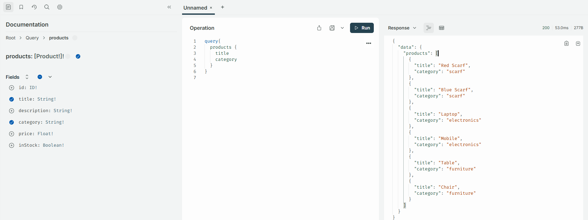
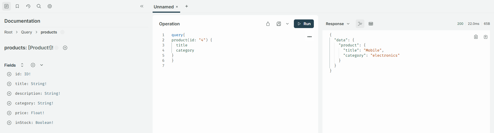
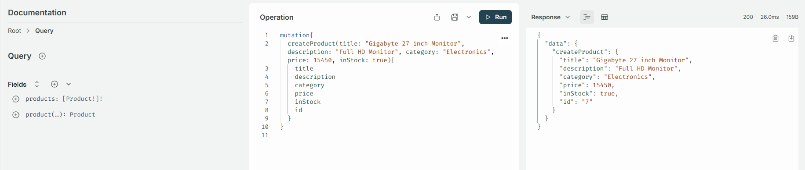
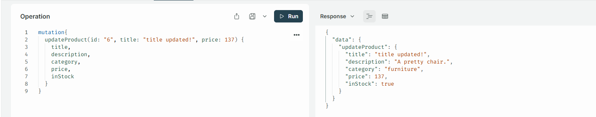
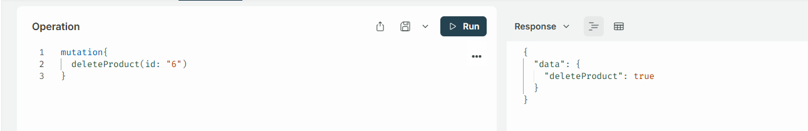

GraphQL is a query language for APIs that allows the client to request exactly the data it needs from the server. Unlike REST, where we usually have multiple endpoints and may receive unnecessary data, GraphQL typically uses a single endpoint and lets the client specify the required fields. It uses a strongly typed schema and supports queries for fetching data and mutations for modifying data.
@apollo/server is a GraphQL server library for Node.js. Install command: npm i @apollo/server
GraphQL.js is a JavaScript implementation of GraphQL. Install command: npm i graphql
graphql-tag is a library for writing GraphQL queries using tagged template literals. Install command: npm i graphql-tag
Combine all these into one command: npm i @apollo/server graphql graphql-tag
GraphQL schema defines the rules for what data the client can request and what structure and data types the server will return.
For example, suppose we have a User type in GraphQL. The schema defines that a user has an id, name, and email. The client can request these fields, but it cannot request a field that is not defined in the schema. Also, each field has a specific type, such as id being an ID and name being a String. That's why the schema acts as a strongly typed contract between the client and server.
Schema example
We take User data as an example
Query example
Query is a way to fetch data from the server, like Rest API controller
Folder structure
Dependencies
Install command: npm i @apollo/server graphql graphql-tag
extra dependencies nodemon for development npm i nodemon --save-dev
Demo Products in src/dummy-data/demo-products.js
01. Modified package.json
02. Create src/graphql/schema.js
Note:
products: [Product!]! -- Product is the name of the type defined in the schema
product(id: ID!): Product -- Product is the name of the type defined in the schema
There is a product query that requires an id argument, and it returns a Product object.
Type Meaning
03. To get all products or single product we use query by using method, which known as Resolver
for that we create src/graphql/resolvers.js
04. Create src/server.js
Here we do the following things:
First, I import ApolloServer and the standalone server function. Then I import my GraphQL schema and resolvers. I create an ApolloServer instance by passing the type definitions and resolvers. Finally, I start the standalone server on port 4000 and get the server URL.
05. Run this command: npm run dev
06. Open this url: http://localhost:4000
We write this query in the GraphQL and get the result by pressing the Run button

07. Now we create a query and resolver to get a single product
We write a query in the src/graphql/schema.js
08. Then write a Query in the src/graphql/resolver.js for resolve the product query
So updated code of src/graphql/resolver.js
09. Run this command: npm run dev
10. Open this url: http://localhost:4000

11. At this moment we have fetched all products and get single product by using query which is a GraphQL Operation. Now we will learn about GraphQL Mutations
GraphQL MutationsMutation is a GraphQL Operation which is used to update / modify the data
First we create a mutation by define a type for create a product in the src/graphql/schema.js
Note:
We use ( ! ) to make the field required. Because to create a product we need title, description, category, price and inStock.
Then we write a resolver to execute the mutation in the src/graphql/resolver.js
Note:
We use a dummy static data so we use ( products.push(newlyProduct); ) to update new data.

In this way we make another mutation and resolver to update a product by provide id
So, goto the src/graphql/schema.js we write a mutation
Note:
In this updateProduct mutation we use ( id:ID! ) to make the field required. Because to update a product we need id. And we use ( title: String, description: String, category: String, price: Float, inStock: Boolean ) to make the field optional.
Then we write a resolver to execute the mutation in the src/graphql/resolver.js

Explanation:
{id, ...updates} -> This is object destructuring with the rest operator.
JavaScript separates the object into: id and updates.
Important: ...updates "Collect all remaining properties into a new object called updates.
Conceptually similar to:
Important breakdown:
Why did "title" and "price" change?
Because the later spread wins when properties have the same name:
products[index] = updateProduct will update the existing product
Now let's write a mutation and resolver to delete a product
Open src/graphql/schema.js
Open src/graphql/resolver.js
